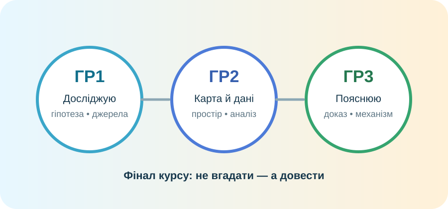

ПРАВИЛА
Це діагностика, не тренажер
Спочатку виконайте завдання самостійно. Карта й відкриті геодані дозволені там, де це зазначено. Пояснення без доказу оцінюється нижче, навіть якщо звучить дуже впевнено.
10 балів: ГР1 — 3 бали, ГР2 — 3 бали, ГР3 — 4 бали.

Маршрут: досліджую → читаю карту й дані → пояснюю та аргументую.
Паспорт учня
Потрібно заповнити всі три поля.
ГР1 • ДОСЛІДЖУЄ ПРИРОДУ
1. Сформулюйте й перевірте гіпотезу — 3 бали
Ситуація: два міста лежать приблизно на 50° пн. ш. Одне має м’якішу зиму й більше опадів, інше — холоднішу зиму та більшу річну амплітуду температур.
1 бал. Сформулюйте гіпотезу, яка пояснює різницю.
1 бал. Назвіть два типи географічних даних, якими Ви перевірите гіпотезу.
1 бал. Який результат спростував би Вашу гіпотезу?
ГР2 • КАРТА Й ДАНІ
2. Просторовий аналіз — 3 бали
1 бал. Виберіть материк і наведіть один приклад зв’язку між тектонічною будовою та рельєфом.
1 бал. Виберіть океан і наведіть один приклад зв’язку між течіями та природою узбережжя.
1 бал. Яке джерело з трьох вище найкраще використати для спостереження сучасної пожежі, пилової бурі або льодового покриву? Чому?
ГР3 • ПОЯСНЮЄ ЗАКОНОМІРНОСТІ
3. Географічний кейс — 4 бали
Кейс: прибережний регіон швидко зростає. Є порт, рибні ресурси й родючі дельтові землі, але також повені, тропічні циклони, засолення ґрунтів і забруднення моря.
1 бал. Назвіть дві природні переваги регіону для населення й господарства.
1 бал. Назвіть два ризики та поясніть механізм хоча б одного з них.
2 бали • CER. Чи варто далі концентрувати населення в цьому регіоні? Сформулюйте тезу, наведіть щонайменше два докази й поясніть логіку рішення.
Самооцінювання
Одне вміння, яке я забираю з курсу:
Завершення
Оцініть виконання за критеріями: відповідь має містити коректний географічний зміст, доказ і причинне пояснення.
Результат з’явиться тут.